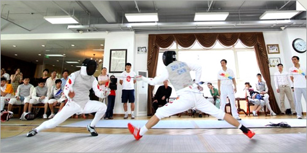
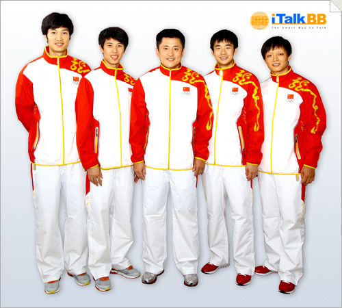

iTalkBB宣布贊助中國健兒出征奧運
（弗吉尼亞維也納7月18日）
四年之前，中國奧運健兒坐陣主場，以51枚金牌為中國體育事業寫下輝煌的一頁；四年之後，他們遠征倫敦，為更高榮譽竭力而戰。其中，中國男子花劍隊，作為現世界排名第一的勁旅，經過四年磨礪，已做好準備，將在倫敦寶劍出鞘，為國爭光。
鼎力支持，激情守望，iTalkBB心繫奧運
一直致力於"為海外華人提供更美好生活"的iTalkBB新電信日前宣布傾情贊助中國男子花劍隊征戰倫敦，追逐奧運夢想，亮劍世界，榮耀華人。iTalkBB的 CEO趙捷先生表示，"奧運會是最高水平的體育賽事，看到祖國健兒揚威賽場，體育事業蓬勃發展，會讓每一位海外華人都熱血沸騰，倍感振奮。"
圖為男子花劍隊訓練，圖片來源：騰訊網
擊劍幷非中國的傳統強項，而中國男子花劍隊的年輕劍客們通過夜以繼日的努力訓練，一步步躋身世界一流。男子花劍團體這枚金牌，可以說是倫敦奧運會上我國擊劍項目上最有希望獲得的金牌之一。兩屆世錦賽冠軍、世界排名第一的成績，讓各支歐洲傳統強隊也不得不在中國劍客面前俯首稱臣。這與廣大海外華人們在異國他鄉中逆勢拼搏，取得佳績的精神是契合的，與iTalkBB銳意進取，追求卓越，成為世界VOIP行業領導者的企業形象是契合的。趙捷先生說，"我們尊重幷讚賞這種奮發的精神，也希望這種精神能夠感染更多華人朋友"。 所以，iTalkBB決定大力贊助男子花劍隊員們的本次出征，為他們能取得好成績祈福許願，貢獻力量。
劍鋒所指，所向披靡，兩代劍客期待圓夢
自上世紀90年代起，中國男子花劍開始崛起 ，葉沖、王海濱和董兆致組成的三劍客在2000年悉尼奧運會上便一舉斬獲團體銀牌，力壓多個老牌歐洲強隊，技驚世界；之後的2004年雅典奧運會他們再次飲恨居次，獲得亞軍。金牌，是那一代中國劍客們沒有實現的夢。
圖為中國男子奧運花劍隊成員，從左至右依次雷聲、朱俊、教練王海濱、馬劍飛、張亮亮
04年之後，老劍客們陸續退役，中國擊劍事業卻未因此而停滯，而是後繼有人，青出於藍。新一代男花運動員們達到了前輩們從未到達的高度。雷聲、朱俊、馬劍飛、張亮亮這四位80後年輕劍客，在少帥王海濱的帶領下捷報頻傳。2010年7月，中國男花的團體積分超越世界霸主意大利隊，首次登上世界排名第一的寶座。11月的世錦賽，中國隊在決賽中上演了一出如同武俠小說中的橋段般的驚天逆轉，一劍封喉，擊敗了意大利隊，在世錦賽奪冠，粉碎了意大利隊三連冠的夢想。2011年世錦賽，他們成功衛冕。
攜着蟬聯冠軍的氣勢，中國男花也有了足夠的信心和底氣，在本次倫敦奧運會中沖金奪冠，爭取為中國擊劍事業再添閃亮的一筆。
2012年夏天，iTalkBB新電信與全球華人一起，為奧運健兒吶喊加油！激勵一代人，情傳全世界。
更多詳情，請登錄 www.iTalkBB.com或撥打24小時服務熱線1-877-482-5522查詢。
關於iTalkBB：
iTalkBB新電信是享譽全美的優秀通訊品牌，是國際電訊行業的領導和先驅。其以頂級全球網絡和前沿技術為依託，以最具競爭力的價格為客戶提供高質、清晰的本地、國內及國際長途電話服務，以及高清中文電視直播、回播與點播服務。其電話業務能完全取代傳統家庭電話，並享受多重免費提供的附加功能如來電等待、三方通 話、來電顯示、呼叫轉移等。另有獨一無二的功能——中國大陸、台灣、香港、南韓當地號碼，當地親友只要撥打此號碼，就能接通到在美國的親友，而無需支付國際 長途費用 。iTalkBB的高清中文電視服務，自問世以來便受到了廣泛的好評和歡迎。超過五十個熱門頻道支持實時直播與48小時回看，海量最新電影電視劇綜藝節目免 費無限點播，讓用戶以最低價格盡享華語娛樂。iTalkBB新電信將不斷努力，與您共同成就更美好的生活。iTalkBB設有24小時中英文的客戶服務熱線: 1-877-482- 5522和官方網站www.iTalkBB.com，一年365天提供不間斷的服務與更多信息的查詢。